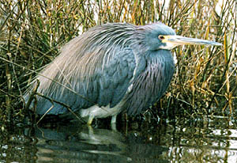

| These photographs accompany records that have been recently submitted to the committee. This record
has been ACCEPTED.  Tricolored Heron Egretta tricolor 4 Feb. 1999, Bolsa Chica, ORA 1998-200 © 1999 Michael M. Rogers Back to CBRC Rare Bird Photos |